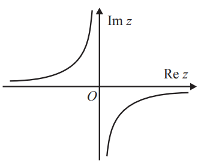
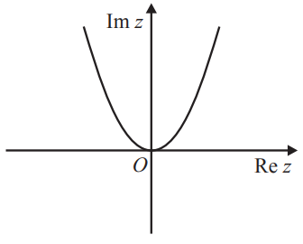
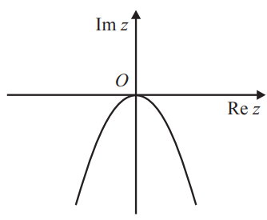
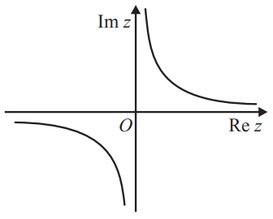

Exame Final Nacional de Matemática A
Prova 635 | 1.ª Fase | Ensino Secundário | 2020
12.º Ano de Escolaridade
Decreto-Lei n.º 139/2012, de 5 de julho | Decreto-Lei n.º 55/2018, de 6 de julho
Duração da Prova: 150 minutos. | Tolerância: 30 minutos.
8 Páginas
A prova inclui 4 itens, devidamente identificados no enunciado, cujas respostas contribuem obrigatoriamente para a classificação final (itens 5.1., 5.2., 7.1. e 7.2.). Dos restantes 14 itens da prova, apenas contribuem para a classificação final os 8 itens cujas respostas obtenham melhor pontuação.
Utilize apenas caneta ou esferográfica de tinta azul ou preta.
Não é permitido o uso de corretor. Risque aquilo que pretende que não seja classificado.
É permitido o uso de régua, compasso, esquadro, transferidor e calculadora gráfica.
Apresente apenas uma resposta para cada item.
As cotações dos itens encontram-se no final do enunciado da prova.
A prova inclui um formulário.
Nas respostas aos itens de escolha múltipla, selecione a opção correta. Escreva, na folha de respostas, o número do item e a letra que identifica a opção escolhida.
Nas respostas aos restantes itens, apresente todos os cálculos que tiver de efetuar e todas as justificações necessárias. Quando, para um resultado, não é pedida a aproximação, apresente sempre o valor exato.
Comprimento de um arco de circunferência:
$\alpha r$ ($\alpha$ - amplitude em radianos do ângulo ao centro; $r$ - raio)Área de um polígono regular: $Semiperímetro$ x $Apótema$
Área de um sector circular:
$ \frac{\alpha r^2}{2} $ ($\alpha$ - amplitude, em radianos, do ângulo ao centro; $r$ - raio )Área lateral de um cone: $\pi r g$ ($r$ - raio da base; $g$ - geratriz)
Área de uma superfície esférica: $4 \pi r^2$ ($r$ - raio)
Volume de uma pirâmide:$ \frac{1}{3}$ x $Área\ da\ Base$ x $Altura$
Volume de um cone:$ \frac{1}{3}$ x $Área\ da\ Base$ x $Altura$
Volume de uma esfera:$ \frac{4}{3} \pi r^3$ ($r$ - raio)
Soma dos $n$ primeiros termos de uma progressão ($μ_n$)
Progressão aritmética: $\frac{μ_1 + μ_n}{2}$ x $n$
Progressão geométrica: $μ_1$ x $ \frac{1 - r^n}{1 - r} $
$ sen (a + b) = sen\ a\ cos\ b + sen\ b\ cos\ a $
$ sen (a + b) = cos\ a\ cos\ b + sen\ a\ sen\ b $
$( \rho e^{i \theta})^n$ = $ ( \rho^n e^{i n \theta}) $
$ \sqrt[n]{\rho e^{i \theta}} $ = $ \sqrt[n]{\rho e^{i \frac{\theta + 2 k \pi}{n} }} $ ($k \in$ {0,..., $n$ - 1} e $n \in \N$)
$(u + v)'$ = $u' + v'$
$(u v)' = u' v + u v'$
$ (\frac{u}{v})' = \frac{u' v - u v'}{v^2} $
$(u^n)' = n u^{n - 1} u' (n \in \R)$
$ (sen\ u)' = u' cos u $
$ (cos\ u)' = - u' sen u $
$ (tg\ u)' = \frac{u'}{cos^2 u} $
$ (e^u)' = u' e^u $
$ (a^u)' = u' a^u ln\ a (a \in \R^+$ \{1} $)$
$ (ln \u)' = \frac{u'}{u} $
$ (log_a u)' = \frac{u'}{u\ ln\ a} (a \in \R^+ $ \{1} $)$
$ lim( 1 + \frac{1}{n} )^n = e (n \in \N) $
$ \displaystyle{\lim_{x \to 0}} \frac{sen\ x}{x} = 1 $
$ \displaystyle{\lim_{x \to 0}} \frac{e^x - 1}{x} = 1 $
$ \displaystyle{\lim_{x \to +\infty}} \frac{ln\ x}{x} = 0 $
$ \displaystyle{\lim_{x \to +\infty}} \frac{e^x}{x^p} = +\infty (p \in \R) $
A que é igual $lim\ f(u_n)$?
(A) $-\infty$
(B) 0
(C) 1
(D) $+\infty$
Qual é a probabilidade de exatamente duas delas escolherem o número $5$ ?
(A) 0,1530
(B) 0,1532
(C) 0,1534
(D) 0,1536
Sejam A e B os acontecimentos:
A : «A primeira bola retirada é azul»
B : «A segunda bola retirada é branca»
Sabe-se que $ P(A \cap B) = \frac{1}{3}P(A) $
Justifique que inicialmente existia um número ímpar de bolas azuis no saco.
Sugestão: comece por designar por $a$ o número de bolas azuis e por $b$ o número de bolas brancas que existiam inicialmente no saco.
Pretende-se colocar todas estas bolas em dez caixas numeradas de 1 a 10, de tal forma que:
Nestas condições, de quantas maneiras diferentes podem ficar colocadas as bolas nas dez caixas?
(A) 1176
(B) 2520
(C) 28 016
(D) 30 550
Resolva este item sem recorrer à calculadora.
Considere, em C, a equação $z^2 = \bar{z}$
Sabe-se que, no plano complexo, os afixos dos números complexos não nulos que são soluções desta equação são os vértices de um polígono regular.
Determine o perímetro desse polígono.
Em qual das opções seguintes pode estar representado, no plano complexo, o conjunto de pontos definido por esta condição?
(A)

(B)
(C)

(D)
Figura 1
Sabe-se que:
Resolva os itens 5.1. e 5.2. sem recorrer à calculadora.
Determine as coordenadas do ponto do plano $ABC$ que se encontra mais próximo do ponto $P$
Sabe-se que:
Qual dos valores seguintes é o valor, aproximado às centésimas, da amplitude, em radianos, do ângulo $STU$?
Figura 2
(A) 4,25
(B) 2,68
(C) 2,03
(D) 1,82
Na Figura 3, está representado esse mecanismo.
Figura 3
Na Figura 4, está representado um esquema do mecanismo descrito.
Relativamente a esta figura, sabe-se que:
Figura 4
Sabe-se que o movimento de rotação da manivela se inicia quando o pistão se encontra na posição B e que a manivela descreve voltas completas a uma frequência angular constante.
Admita que a função que dá, em centímetros, a distância do pistão ao ponto O, em função do tempo, t, em segundos, contado a partir do instante em que é iniciado o movimento, é dada por
$$ d(t) = cos\ t + \sqrt{9 - sen^2t}, t \geqslant 0 $$(o argumento das funções seno e cosseno está expresso em radianos)
(A) 2
(B) 3
(C) 4
(D) 5
Sabe-se que, dois segundos após esse instante, a distância do pistão ao ponto $O$ diminuiu 25%.
Determine, recorrendo às capacidades gráficas da calculadora, a distância, em centímetros, arredondada às décimas, do pistão ao ponto $O$ no instante $t_0$, sabendo-se que este valor existe e é único.
Não justifique a validade do resultado obtido na calculadora.
Na sua resposta:
- apresente uma equação que lhe permita resolver o problema;
- reproduza, num referencial, o(s) gráfico(s) da(s) função(ões) visualizado(s) na calculadora que lhe permite(m) resolver a equação e apresente as coordenadas do(s) ponto(s) relevante(s) arredondadas às centésimas;
- apresente o valor pedido em centímetros, arredondado às décimas.
Se, nos cálculos intermédios, proceder a arredondamentos, conserve, no mínimo, duas casas decimais.
Está também representada a semirreta $OA$, que intersecta a circunferência trigonométrica no ponto $B$
Qual das expressões seguintes dá, em função de $a$, a abcissa do ponto $B$?
(A) $ \frac{1}{\sqrt{a^2 + 1}} $
(B) $ \sqrt{a^2 + 1} $
(C) $ \frac{1}{\sqrt{a^2 - 1}} $
(D) $ \sqrt{a^2 - 1} $
Figura 5
Resolva os itens 9.1. e 9.2. sem recorrer à calculadora.
Determine uma equação dessa assíntota.
Determine essa solução e apresente-a na forma $ - ln\ k$, com $k > 0$
Qual das expressões seguintes pode ser a expressão analítica da função $h^{-1}$, função inversa de $h$ ?
(A) $ e^x - 1 $
(B) $ 1 - e^x $
(C) $ ln(e^x - 1) $
(D) $ ln(1 - e^x) $
Resolva os itens 10.1. e 10.2. sem recorrer à calculadora.
Na sua resposta, apresente o(s) intervalo(s) de monotonia.
| As pontuações obtidas nas respostas a estes 4 itens da prova contribuem obrigatoriamente para a classificação final. | 5.1. | 5.2. | 7.1. | 7.2. | Subtotal | ||||||||||
|---|---|---|---|---|---|---|---|---|---|---|---|---|---|---|---|
| Cotação (em pontos) final. | 16 | 20 | 16 | 20 | 72 | ||||||||||
| Destes 14 itens, contribuem para a classificação final da prova os 8 itens cujas respostas obtenham melhor pontuação. | 1.1. | 1.2. | 2. | 3.1. | 3.2. | 4.1. | 4.2. | 6. | 8. | 9.1. | 9.2. | 9.3. | 10.1. | 10.2. | Subtotal |
| Cotação (em pontos) | 8 x 16 pontos | 128 | |||||||||||||
| TOTAL | 200 | ||||||||||||||